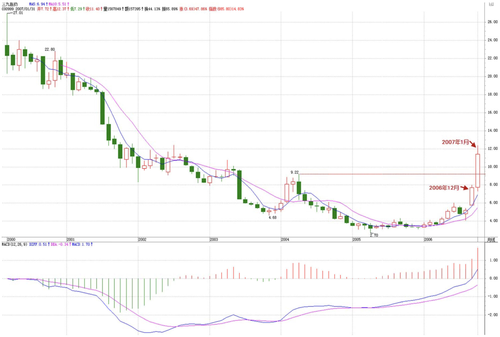
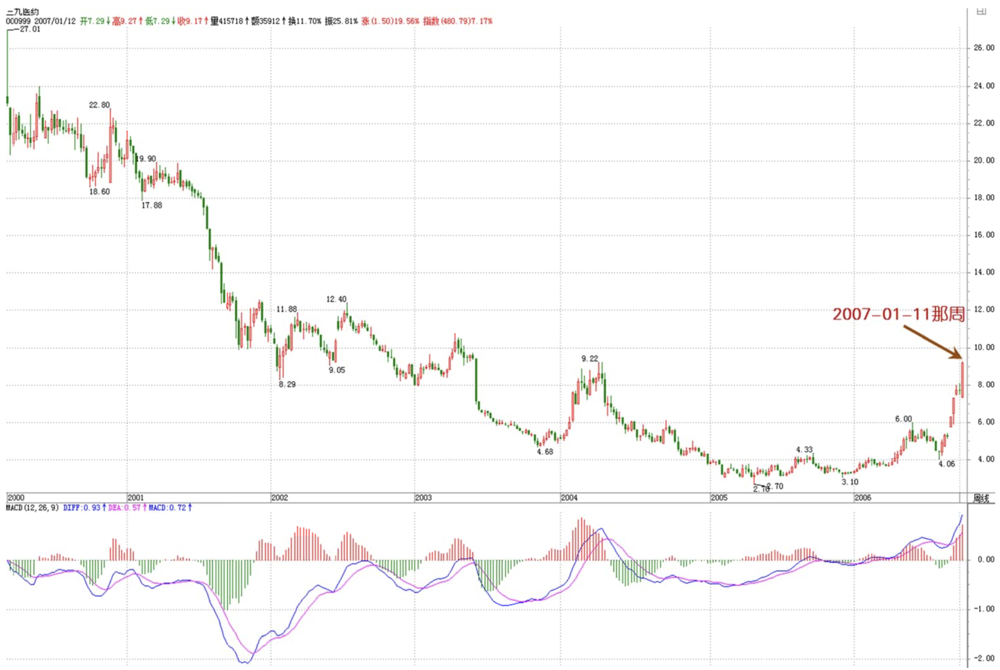
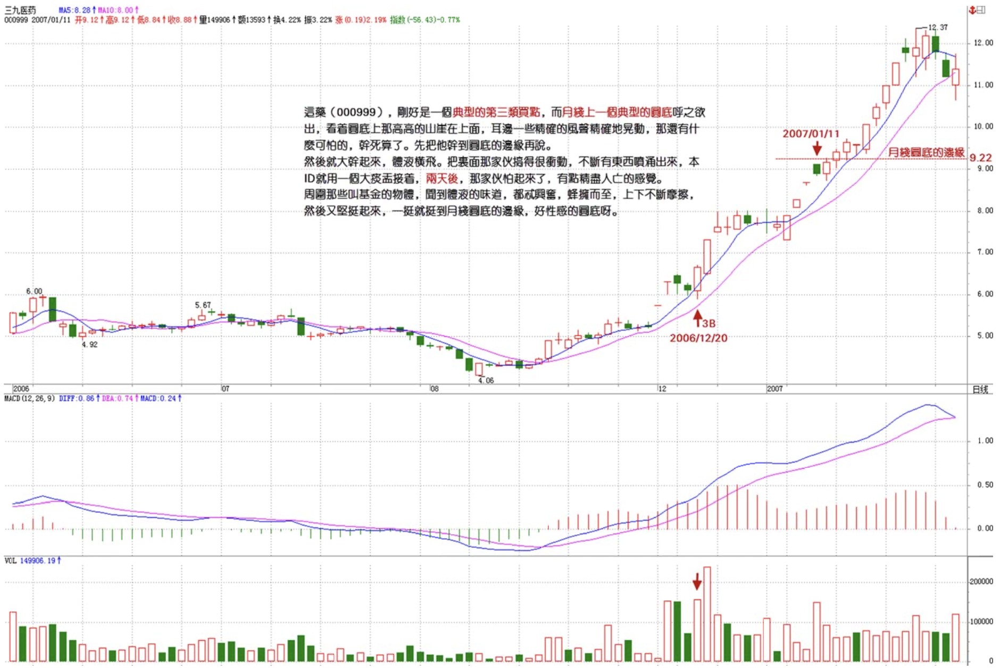
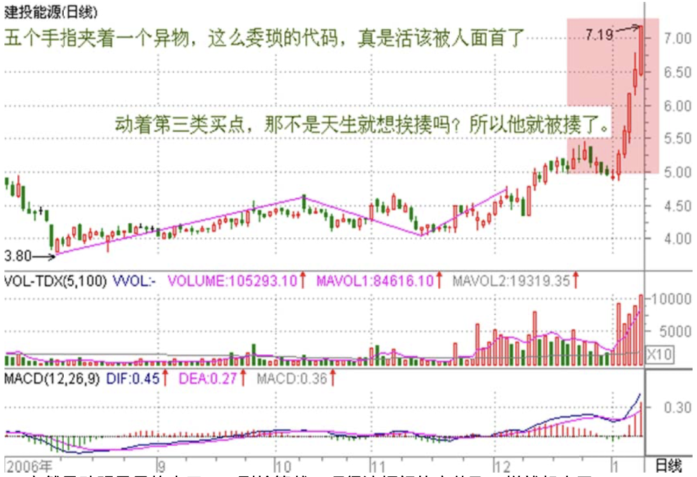
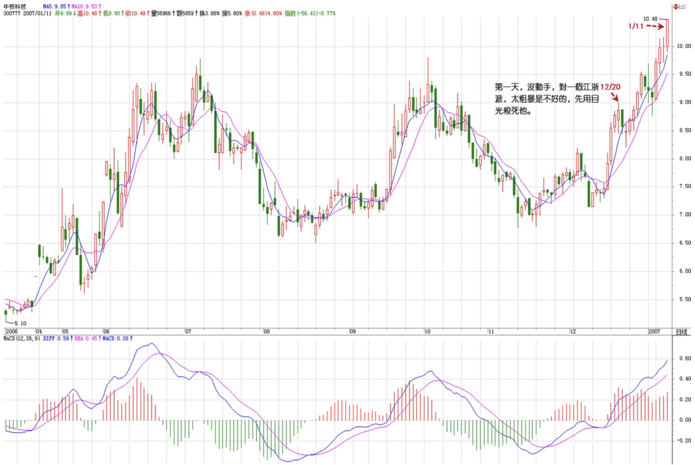
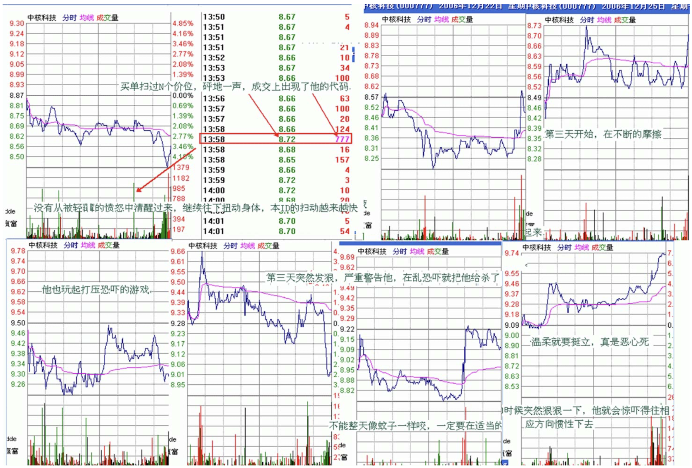
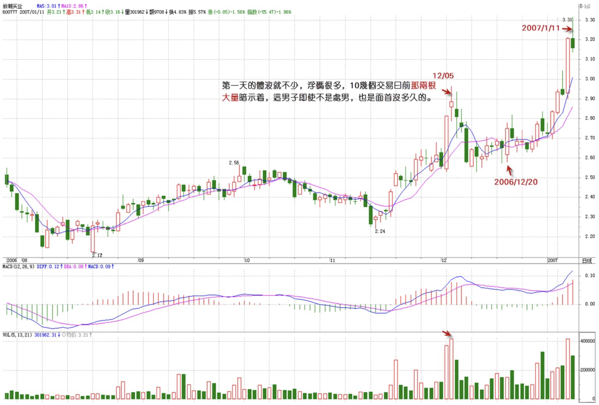
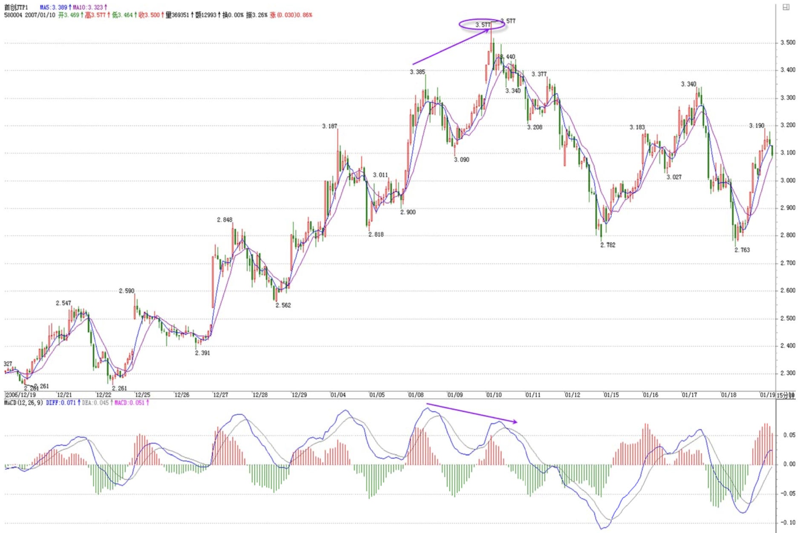
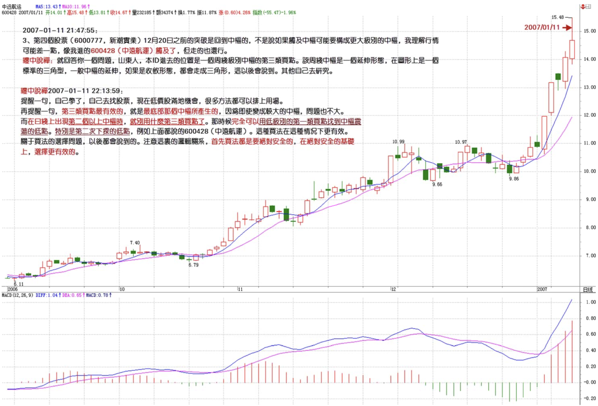
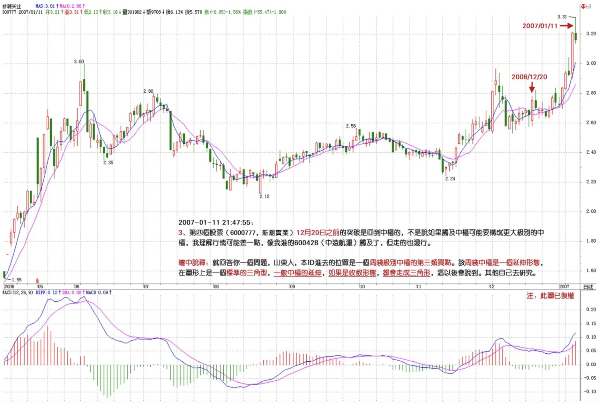

教你炒股票22：将8亿的大米装到5个庄家的肚里。
2007/1/11 15:10:32
今天说点不算闲话的闲话。说了这么多买点，对于小资金来说，出现跟着买就可以了，但对于大资金来说，具体的情况要复杂点，因为一个大资金要进去，又不想变庄家，这是需要很高技巧的。下面是本ID发的一个梦，各位就权当梦话听，如果现实中有任何对应物，那纯属巧合，本ID不背负任何的法律责任。
12月20日，突然天下掉下够8亿农民一人一口的大米，然后就玩了这样一个游戏，把这八亿大米装到5个叫庄家的某类面首的肚子里：撑活他。首先，不能把8亿都一起塞进去，留了1亿机动，就是哪个庄家不听话，想折腾，就要出手教训他。这部分的大米是不能固定在任何一个庄家肚子里，要每天在5个庄家肚子里流动，有时候会变成1.5亿，有时候可能变成5千万，这都根据盘面的情况来的。当然，这都是后话，前提是另外那7亿已经塞到5个庄家的肚子里。
现在，面首都爱用药，所以要治面首，当然首先要拥有药。这药，刚好是一个典型的第三类买点，而月线上一个典型的圆底呼之欲出，看着圆底上那高高的山崖在上面，耳边一些精确的风声精确地晃动，那还有什么可怕的，干死算了。先把他干到圆底的边缘再说。然后就大干起来，体液横飞。把里面那家伙搞得很冲动，不断有东西喷涌出来，本ID就用一个大痰盂接着，两天后，那家伙怕起来了，有点精尽人亡的感觉，但周围那些叫基金的物体，闻到体液的味道，都忒兴奋，蜂拥而至，上下不断摩擦，然后又坚挺起来，一挺就挺到月线圆底的边缘，好性感的圆底呀。



第二个，五个手指夹着一个异物，这么委琐的代码，真是活该被人面首了。还贱着说自己能，耳边的风声吹过来：“我们不光要部分被面首，还要整体上来被大家面首”，这么犯贱的物体，还要晃动着第三类买点，那不是天生就想挨揍吗？所以他就被揍了。第一天，轻轻碰了一下，没什么体液，这庄家够抠门的，性冷淡？第二天，轻轻突破一下，体液多了点，其后两天，盘中上窜下跳的，但就是体液不多，碰到一个更年期的主。一般这种主，不能硬搞，闪一个身，让他摆摆庄家的威风，一根吸管，顺着慢慢往下边走边吸。跌破某整数位后，那家伙也被吸的没了力，下不去了，本ID突然晃动明晃晃的大刀，一副抢筹状。吓得这抠门的家伙飞一样就起来了，对付这种抠门的家伙，更年期的家伙，就要这样，以吸为主，偶尔恐吓。这种抠门的家伙，一般都自以为自己的题材很牛，怕自己损失了什么低价筹码，一恐吓就飞得比鸭子还快。对这种人，就要天天弄他的短差，砸得狠就顶死他，拉得狠就先躲在傍边，瞧好机会就突然袭击他，让他难受。对这种庄家，要像蚊子一样不断地出击，更要像赶鸭子一样往上赶。

第三个，和第一个的代码模式是一样的，这个面首比较秀气，典型的江浙派，一看就不喜欢。只是有人不断向本ID灌输他要整体变成面首、又有这个题材那个题材，就像去某种店里那些坐台的，一定要本ID消费他，本ID想起N年前曾消费过他，突然心里一动，有了一种怀旧的感觉，试一下N年后，这味道是否依然从前。因此，就在一个小级别的第三类买点开始下手了。这有点像419，明知道这只能是419的，但要的就是那种激情，那种不循规蹈矩的风情。第一天，没动手，对一个江浙派，太粗暴是不好的，先用目光杀死他。第二天，为了表示对他的旧情依旧，把他的代码当成买单输进去，买单扫过N个价位，砰地一声，成交上出现了他的代码。那江浙派被惊动了，窜动两下，开始在上面放单，本ID又轻轻扫了他几下。突然，本ID在下面放上一个9999的买单，对他这类轻盈的体形，9999已经足够耀目了。江浙派定了一定，正想反应，突然那买单又没了。惊鸿一现，已经在江浙派软软的身上留下了粉红的印记：这面首是本ID的了。一种被轻薄的感觉在江浙派身上晃动，他开始发骚，开始往下扭动身体。本ID顺着着这身体的轨迹轻扫着，还真有点体液。第二天，江浙派没有从被轻薄的愤怒中清醒过来，继续往下扭动身体，本ID的扫动越来越快，江浙派大概突然发现，这样继续下去，他就有被吸干的危险，尾市几笔就拉起来，从第三天开始，在不断的摩擦中，面首开始挺立，江浙派也就是江浙派，就是没什么牛劲，每天尾市的游戏继续。突然有一天，他也玩起打压恐吓的游戏。一个江浙派，水一样的男子，一副恐吓状，真是太滑稽了。前两天，本ID就看热闹，不管他，第三天突然发狠，严重警告他，在乱恐吓就把他给杀了。江浙派果然是胆小之人，一碰到比他还凶恶的人，也只好温柔起来。水一样的男子，一温柔就要挺立，真是恶心死了。对这种男子，不能整天像蚊子一样咬，一定要在适当的时候突然狠狠一下，他就会惊吓得往相应方向惯性下去，一般来说，这种面首都是反应有点迟钝的，注定这种面首画出来的面相，总是反反复复，缠绵不断。


第四的，和江浙派的代码几乎一样，唯一不同就是一个在深圳、一个在上海。一个上海的山东男子是否沾染了上海女男人的气味，在第一天试盘时，就不再成为本ID的一个疑问。对于面首，解决疑问的最好办法就是干，真理是干出来的。第一天的体液就不少，浮码很多，10几个交易日前那两根大量暗示着，这男子即使不是处男，也是面首没多久的。这样最好了，浮码多，水就混，藏点大米还不简单？这大米藏得又快又多，这种打乱仗的感觉真不错，就像一场NP游戏，谁怕谁呀。一般来说，对于大资金来说，打乱仗是最好玩的，记得N年前，那次，把一个面首从7元多一下干了N倍，中途就在20多换了一口气，4家人，一直打乱仗，其他人在周围进进出出晃悠着，好玩透了，还是NP好呀。

最后一个，虽然就和江浙派差一个尾数，但性格怎么差那么远，典型的山里男子，老实巴交的，没有激情，但很稳健，像个仆人，随便就把大米藏好了。为什么消费他？不为什么，仅仅是因为他和江浙派尾数差一个，而山东人是前面差一个，好记。而且周线图上的中枢强烈地勾引着走势往上，这种老实巴交的，就算没有什么大惊喜，只要让人放心就好。一般在一个组合里，一定要放一个这样老实巴交的面首，万一其他股票出现什么特殊的情况，马上变现这个去增援是能随时办到的，这样就一定不会出大乱子了。市场里，安全是第一的。而对于资金的总体安全来说，一定的快速变现能力是最重要的。
本ID这里梦话连篇，当然是有风险的，最直接的，就是里面的人看到了，气不过，狂洗盘，这，本ID还真不怕。正因为不怕，所以就继续梦话连篇，各位最好就当谎话连篇，千万别当真。关于大资金不想当庄家，又想资金利用率高，当然有很多的方法，这只是其中的一种。一般来说，这种阻击，在一个低位的大级别第三类买点进行是比较安全的，首先，第一类买点不适合，你先进去，大家都看着你，找机会吃你，你还找哪里潜伏下来？第二类买点是可以的，但一般都采取比较温柔的办法，慢慢来。第三类买点介入，有点硬来的感觉，这要求有一定的功力，否则给吃了都不知道怎么死的。但这样的安全性在于，第一，时间利用率高，第三类买点等于箭在弦上了，你这样突然进去横插一刀，除非是实力特别强，而且所用资金又没有什么期限，所弄的题材也没到迫在眉睫的地步，这样，他会留下来和你折腾。从而变成持久战。高手就是高在一定要对盘中庄家的脾性有充分的感觉，对症下药，而且对阻击的目标有充分的了解，这样就能避免陷入持久战，互相在那里干耗着。当然，干耗其实也不怕，就是不断弄短差，把成本降下来，熬都熬死对方。这样的前提是资金必须绝对自由、没有期限。一笔自有的，没有利息压力的资金，是阻击的一个最安全的保障。阻击一定要控制好量，最失败的阻击就是阻击成了庄家。为什么要在低位的第三类买点出手，这个位置，庄家已经货不少了，而成本还在附近，如果大力打压，你有实力在低位顶住，除非那面首钱出问题了，否则不可能亏钱把所有货倒给你，如果真是这样，就成全他算了。对于第三类买点的阻击，资金实力是很重要的，关键就是要顶住突然变向的打压，所以也要求一定只能在低位，不能与庄家的成本相差太远。具体的操作还有很多特别重要的细节，以后再说了。
回复
缠中说禅 2007/1/11 15:18:40
大盘继续个股补涨指数调整，目前情况下，只要指数不有效跌破2600点，个股补涨继续火暴。还是低价股。
缠中说禅 2007/1/11 15:35:04
本ID要去西边谈一个什么电视剧的破事，该电视剧的第一部刚在CCTV1播了，现在是第二部。本ID是一点兴趣都没有，但朋友求到，只能去听听。本ID最厌恶的就是搞实业的人说投多少能挣多少的废话。估计今晚又要听一堆。
有问题先放下，晚上上来。但有可能晚点。
缠中说禅 2007/1/11 21:22:01
[匿名] 新年好
2007-01-11 18:44:06
缠姐，去年没跟着你混，真是惨死了。今年一定要跟着你。我现在不管买点了，跟你进到山东了。虽说这是你一直不提倡的，可买点都过了，也管不了那么多了。
==
要自己立起来。靠别人是坏毛病。
缠中说禅 2007/1/11 21:30:16
小明
2007-01-11 21:19:52
缠mm我有一个困扰我很久的问题，请你一定也回答我！
长久以来我一直在追求上升途中最肥的一段，可是到现在一无所获，甚至还亏损！请你告诉我在技术上能不能找到这样的方法？
以600428为例。看着日K线图12.27日以来的大幅上涨，有没有办法逮到它？
===
你首先问问自己前面20几节的课学了没有？学过还问这种问题？
缠中说禅 2007/1/11 21:31:54
[匿名] 面首甲
2007-01-11 21:27:55
姐姐，你这样不怕把庄家玩死啊！玩死了谁来做庄啊？
===
庄家就是用来玩死的。市场中每年死去的庄家还少吗？
缠中说禅 2007/1/11 21:37:12
[匿名] 无知
2007-01-11 21:30:00
缠姐，这是昨天你和一个同学的问答：
1、工行日线级别的调整需要30分钟图上3个连续走势（下跌-上涨-下跌），完成一个“缠中说禅中枢”，现在是第二个走势阶段；
==
可以这样认为，以后说到趋势中，中枢形态的交替原则，就知道为什么这次的调整如此急促，因为很简单，上次的中枢形态是平台，这以后再说了。
＝＝＝
工行的30分钟的3个连续走势为什么不能从前面的上涨算做是第一段走势呢？中枢的次级别走势应该从哪一段开始算起还是弄不太清楚！！因为整个走势图是连贯的。谢谢了
===
你对基础的问题还是没搞清楚。首先把基本的概念搞清楚。走势都分解成各级别的三种走势类型的组合，你怎么能把前面走势类型的放到后面来？
如果你确实搞不明白这些有点抽象的概念。那就记住，回调的三个次级别是下、上、下；回升的是上、下、上。
这不太严谨，如果你不愿意了解严谨的，这就凑合着用。
缠中说禅 2007/1/11 21:42:34
[匿名] 外科医生
2007-01-11 21:34:20
请问禅妹，怎样在盘面上看出所谓的控盘？
另外，泸天化的庄好慢啊，拉一天，休一天，磨羊工啊。
===
长庄和短庄当然不一定，长庄在推升前期，基本不会拉什么大阳线，特别是通道式上升那种，一旦突破通道上轨就会出现调整。
短庄是快，基本就是三段，拉一段，歇一下，再拉一段就收工。对于大一点的资金来说，都跟短庄是不切实际的，只能小部分资金参与其中，特别现在越来越集团化运动，以后短庄会越来越少。
缠中说禅 2007/1/11 21:51:09
[匿名] 老小孩
2007-01-11 21:40:18
580004最近一直在升突然来两个黑家伙是转折还是背弛搞不懂，请教老师，以后会怎麽走？
====
上涨的背弛都是在上涨中看的，跌了那么多还讨论什么背弛？如果你资金量不大，特别又是权证，根本没必要看太长的图。例如这次，3。5元上在15分钟图上的背弛这么明显，为什么不走？
请记住，最好的当然是卖得准，但如果不能，宁愿早了，千万别晚了。
另外，如果技术不过关，尽量别碰快到期的权证。
要消费就消费处男，别消费什么更年男。

缠中说禅 2007/1/11 22:07:34
[匿名] 在路上
2007-01-11 21:47:55
请问缠姐:
1、第二个股票的中枢ZG是10.16的4.65吗?（日线）
2、第三个江浙的那个好像还在中枢内你就进去了？（日线）
3、第四个12。20之前的突破是回到中枢的，不是说如果触及中枢可能要构成更大级别的中枢，我理解行情可能差一点，像我进的600428触及了，但走的也还行
4、第五个好像也触及了中枢，
请缠姐有空解释一下。
===
就回答你一个，山东人，本ID进去的位置是一个周线级别中枢的第三类买点。该周线中枢是一个延伸形态，在图形上是一个标准的三角型，一般中枢的延伸，如果是收敛形态，都会走成三角形，这以后会说到。
其他自己去研究。


缠中说禅 2007/1/11 22:13:59
对不起，今晚那破电视剧浪费很多时间，现在太晚了，先下。
再见。
提醒一句，自己学了，自己去找股票，现在低价股满地机会，很多方法都可以排上用场。
再提醒一句，第三类买点最有效的，就是最底部那个中枢所产生的，因为即使变成较大的中枢，问题也不大。
而在日线上出现第二个以上中枢时，就别用什么第三类买点了。那时候完全可以用低级别的第一类买点找到中枢震荡的低点。特别是第二次下探的低点，例如上面都说的600428。这种买法在这种情况下更有效。
关于买法的选择问题，以后都会说到的。
注意这里的逻辑关系，首先买法都是要绝对安全的，在绝对安全的基础上，选择更有效的。
缠中说禅 2007/1/11 22:19:56
最后提一个思考题，任何中枢的上面都一定有第三类买点吗？
如果没有，请举例子，并解释这意味着什么？
下了，再见。
缠中说禅 2007/1/12 10:08:36
注意
现在说这5个家伙只是上课，中线没问题，短线这么明目张胆地叫板，对方肯定有反应的。最主要这5个东西短线都有一定涨幅了，别追高。
自己去找一些低价里的第三类买点的，最后别超过5块的。
本ID过年后新阻击了两只，都是刚突破前期高位的，一个和药的代码在第四个位置差一点，一个是过年要送礼的。都在突破的位置上折腾着。
那5只涨那么多的，只能回调后才能考虑介入。
缠中说禅 2007/1/12 10:13:54
还有一个是刚进去阻击的，和环保的有关。3元多，后三只和前面5只不是同一批钱，是从工、中行高位套现的部分。压指数股票炒补涨是年后的大思路，要延续一点时间。工、中行中线没问题，过点时间，大部队回来又会启动了。
缠中说禅 2007/1/12 11:47:04
[匿名] 赚到了
2007-01-12 11:00:41
缠MM,这5个庄家现在是骑虎难下了,你说他们接下来会怎么办?拉嘛,明显为你抬轿,不甘心啊;不拉嘛,吃了一肚子货,更难受了.
==
所以一大早告诉各位，别瞎买。本ID这么明目张胆的示威，现在网络这么发达，你以为对方看不到？
本ID这样说，就是不怕对方知道。但围观的人现在才买，就怕双方打起架了伤到无辜者。
从这5只股票的走势，就可以看出每个庄家的性格。像江浙派，被这么明显的调戏，反应比较激烈。山东人，由于里面都是刚进去的，就顺着大盘来了。大家都不愿意先出手。至于老实巴交的，更没人管了，跟着大盘走。
药和能源，药是有点默契地结成共同体的味道了，所以比较安静。而能源不同，看到没有，今天上上下下在打仗，本ID就喜欢现场直播。
至于今年才进去闹的三只，都在突破点上，慢慢折腾。本ID有的是时间与耐心。
缠中说禅 2007/1/12 11:56:44
[匿名] 摄影之友
2007-01-12 11:43:11
博主:
在沪的山东人我可是整了快三分之一的了..你这样一说.我怎么忽然没底了……
===
这种N个人在里面的对于散户最好操作的，成交量萎缩下来就可以找短线买点介入，成交量一急剧放大就找位置走人。
因为成交量突然放大，就是至少有一方先出手了，一般这种情况，例如四方，最后都要斗下最多两方。但也有例外的，像N年前本ID搞的一个东北股票，四个人一直从7元都都到40几，都没停下来，后来一窝蜂出来，瀑布一样就下来了。
对于本ID来说，对山东人，考验的是耐心，绝不先出手。因为本ID的资金是自有的，没有利息压力，凭什么让本ID先出手？
缠中说禅 2007/1/12 12:02:09
大盘的日线中枢正在形成中，各位应该记得，本ID在9日曾提出一个思考题，就是工行的当时走的是第几段。今天回头一看，应该对走势必完美的原理有一个很深入的了解。为什么？就因为下来的第一波级别太低，这和北辰的情况是一样的，看看现在北辰的走势，对走势必完美就该有认识了。工行的走势是否复制北辰的，大家就慢慢看吧。
下了，再见。